大学第一周总结 & 杂记
好像这周除了第一周发了个微积分笔记外就没发别的了。同时 GitHub 从周四到现在都没有活跃了。
不过这不意味着没更博，实际上更了两篇私博，虽然内容都是高三记录的，我只是将形式转为了电子版（总共 40+ 页，已完成 10+ 页）。
主要原因应该是手疼，我已经在各处多次抱怨过手疼了，也许得找个时间去医院看看。倒也不是真的很疼，但确实很影响敲键盘握鼠标。唉，造孽啊，自作自受。
然后今天又好像有点感冒了（应该不是新冠吧），周末两天都没吃午餐。因此活跃度就降低了。
第一周
饮食
先来看看早上的账单：
真离谱，这几个就要 42 块了。我吃高中三年吃深中食堂就没吃过 25+，早餐没吃过 10+，给我整个 40+。
不过我更倾向于是按错了。左下角的牛奶是 3.5 元，上面两个我忘了，但合计应该是不超过 10 元的，油条以前没吃过物价不清楚，但我想也不至于 20+ 吧。然而我现在处于脸皮薄好面子的阶段，倒也没有当场问清楚，就当捐钱给南大了吧😭。
除开这次，南大的食堂我还是感觉算是物美价廉的，当然也许是因为被深圳的物价折磨习惯了。因此在各处看到吐槽食堂还有点不解，我感觉算不错的了。卫生方面我不好评价，毕竟我第一次吃就能吃出虫。
尤其是早餐的馄饨和午餐晚餐的炒饭，好吃实惠，还领得快，不用排队（主要原因）。
外面的我倒没吃过，高中三年也就似乎吃过一段时间巩师傅早餐（主要是肠粉，有时也吃点别的），后面疫情禁外卖就没吃过了。有点怀念那段时间，争着发起投票抢豆浆，在天还没完全亮，睡眼惺忪地去领早餐的时光。也不知道巩师傅现在怎么样了，看了看他的朋友圈，非常平凡的人啊。祝他生意兴旺，合家欢乐吧。
开学典礼
因为去考了波拔尖，错过了新生入学教育、健雄开学典礼及院徽领取。后面补领时因为已经提前走了，还是没能领到，可惜，可惜。
然后是正式开学典礼，中规中矩吧，不像浙大那般抽象。唯一有印象的大概是所谓「哈牛斯麻剑，北清等等南」。
校歌感觉还挺好听的，但我也只记得第一句「大哉一诚天下动」。深中校歌我也不会唱，只记得几句「凤凰花又开，回回令我感慨；凤凰花又开，朵朵叫我珍爱」什么的，毕竟我对音乐不感冒，是个音痴（白痴）。翰林校歌之前集体教过，当时是会的，现在大概也是遗忘了。我会背的歌大概也只有国歌了吧。
课程
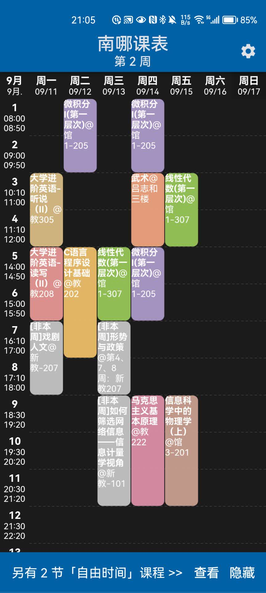
这周意外得时间充裕。本来课就少，又因为种种原因，又没上了几节课。
周一尽管不是早八，但英语课还是犯困了。然后要组小组弄 presentation，我一个摆人最不喜做这些了。高二也有做个 presentation。然而红榜老师可遇不可求，我也不敢轻易退课。
下午抢课时，发现读写老师是黑榜老师，吓得我赶紧退掉了，换了个红榜老师。抽象的是，我抢到时快两点了，我寻思必迟到了，更何况第一节课估计不会讲什么，毕竟这两周人员还会调动，就旷了。
可惜的是我本来还有个「科学之光」课程，然而和周三下午的通识课冲突了，我只好根据学分，含泪退了科光。
微积分课感觉老师有点照本宣科，基本是照着教材讲的。
关于教材，之前就有耳闻国内教材之烂，本以为是危言耸听，亲自看了看南大的两本数学教材《微积分》和《线性代数》后，我才觉得此话不假。抽象，太抽象了。我虽然愚钝，但好歹还是学过一点点微积分和线代的，然而看教材晕头转向，不知所云。周末时重温了一遍 3B1B 的线代，然后看了五集 MIT 公开课的微积分，打算每周看一点 MIT 的微积分和线代的公开课，刚开始虽然我觉得讲得有点啰嗦了，但总比突然让我攀爬悬崖峭壁要好。我感觉跟着教材和老师，我得学懵，得挂科。
下午 CPL 老师出国了，没课。估计是下周末补课。
线代老师我感觉讲得挺有意思的，虽然周五时有点犯困。
体育课选的武术，毕竟我一个心理残疾人，挺想体育课划水的。选了几个热门的入门项目，不出意料没中，最后滑档到最后的武术。
高中时体育课我记得选的要么是田径要么是太极拳。田径平时还算轻松，虽然期末要跑 1000。太极拳就更轻松了，没啥运动量。
说起太极拳，还有点惭愧。期末考试时三人一组，我这个人滥竽充数还行，到这种场合脑子就转不过来，开始没多久就寄了，丢脸丢大发了，还连累了个同班同学。然后补考前，我就宿舍看太极拳视频，去操场主席台里小房间里练习。最后有惊无险过了补考。
然后武术教的也是太极拳，而且也是二十四式简化太极拳。搜了下视频，仿佛又回到了那时候。
武术课还提前二十分钟下课，不知是的确如此还是怎的。
晚上马克思主义原理。老师我感觉蛮不错的，虽然大部分时间我在写作业。但主要是因为我写完作业去听她讲时，感觉没啥意思，尽管我是挺想了解学习马克思主义的。最专注的时间大概是最后一节课看视频，那个视频挺有意思的。
然而马原也有小组，要么小组报告，要么个人论文（还有个辩论，但我是断然不会再辩论了，高一的辩论给我留下了极深的阴影）。而且听说个人论文分不如小组报告高。
周五晚上物理课，大学没学语文、化学和生物，其它都得继续学。老师也感觉不错，唠嗑了两节课，第三节才开始正式讲，然后还提前放学了。
结果物理也有小组，要小组做视频什么的。怎么什么都要小组哇。要我做视频可办不到，最多会个剪辑视频，轻薄本也带不动。
社团
社团这种事一般是与我无关的。高一参加过一个社团，当年还是十佳社团，然而基本没啥活动，就是个空架子。
不过呢由于我在群聊里参与回答了一些问题，就有学长邀请我去 IT 侠面试。
我一个跟陌生人发消息都要深思熟虑，仔细斟词酌句的人竟然能在公共群聊主动回复，这是不可思议的。其实我只是想到自己在搜索引擎的海里苦苦挣扎的经历，尽管我回答的问题都相当的「蠢」，稍微搜索一下，哪怕是百度都有解答，但我还是认真回答了。因为我也是希望，在我因知识的匮乏或其他原因，没能找到想要的结果，小心翼翼地提出一些愚蠢的问题时，也有人能像此时此刻的我一样伸出援手。
于是周三晚我就去面试了。面试后，因我知识匮乏，只有尴尬地旁观，装模做样地看。不过我对拆机还是有点兴趣的，以后可以多了解一点。
不过令人伤心的是，放在门口的伞，在三个小时后不见了。还好南大有赠伞（虽然后面几天我出门时都没下雨），不过还是希望能找回（但不抱太大希望）。
宿舍
来南大半个月，作息终于规律起来了。十点半到十一点半就会熄灯睡觉。然而晚上其他宿舍仍然会传来低素质的人的大呼小叫。
来到大学终究是不想手洗衣服了，洗衣机真爽。在深中待了三年没用过一次洗衣机。
我也不知道洗衣机跟我下面要将的有啥关联，反正联想到了，而且不知道放哪个部分，就写在下面了。
南大有挺多只猫，有一些也亲人。但在我看来远不如深中一只猫可爱。
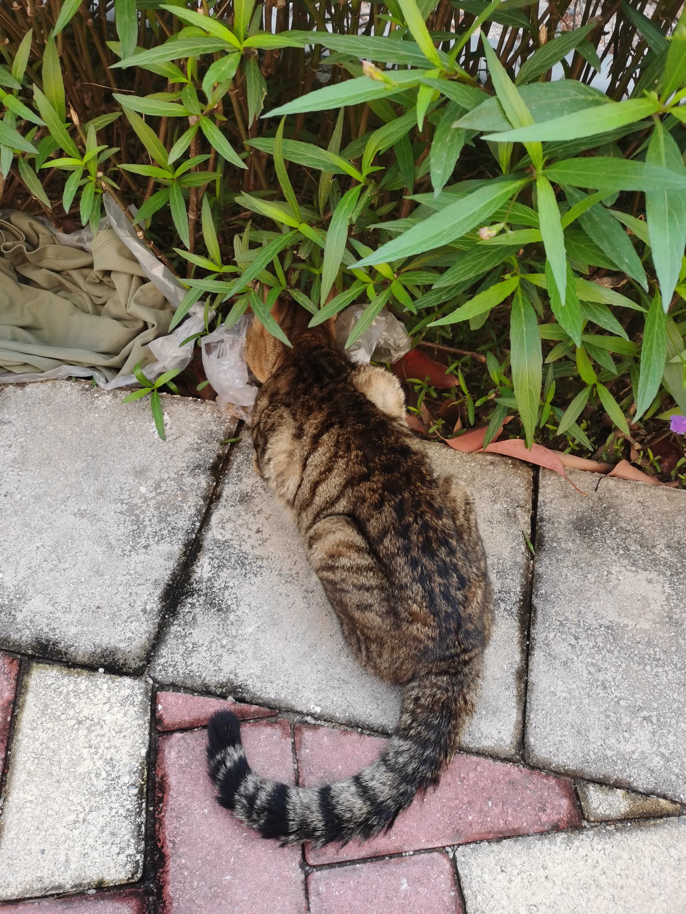
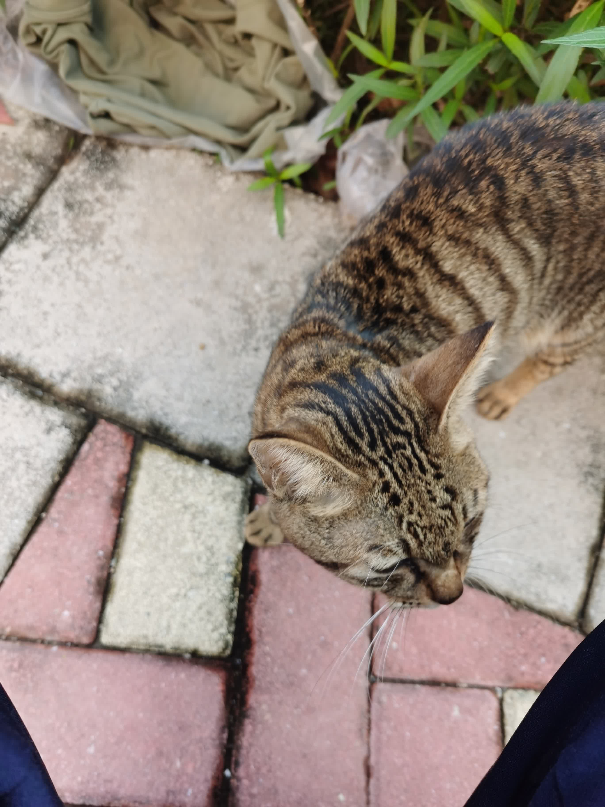
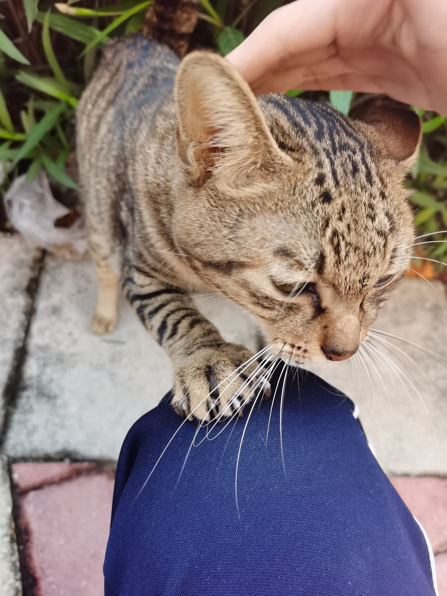
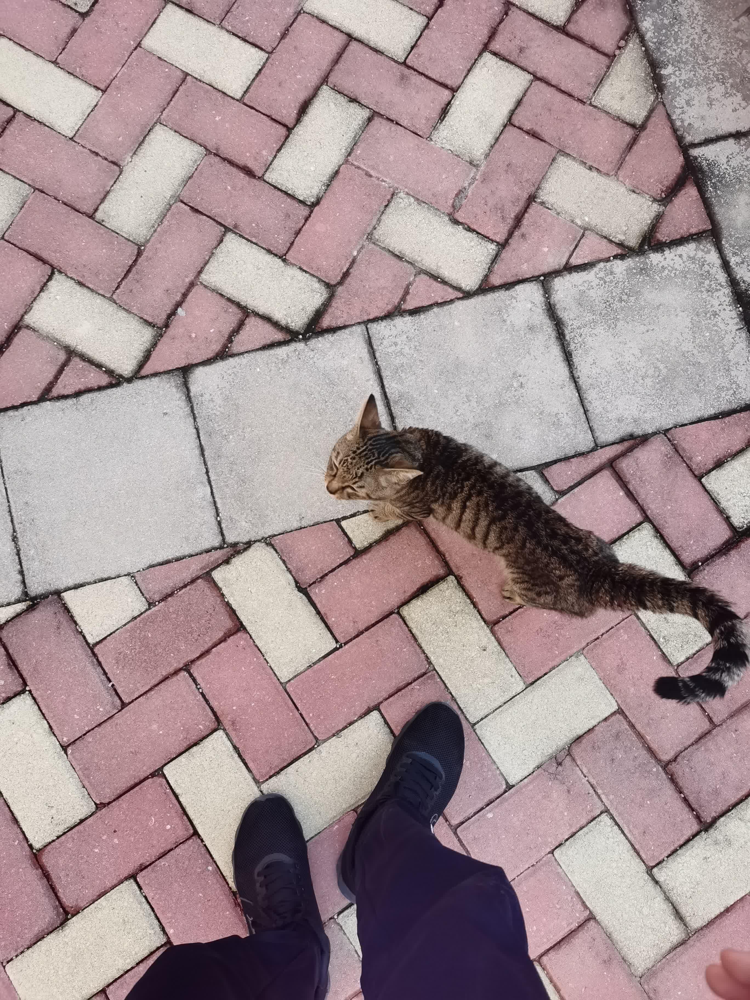
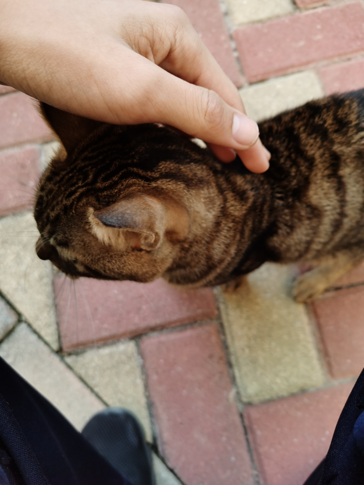
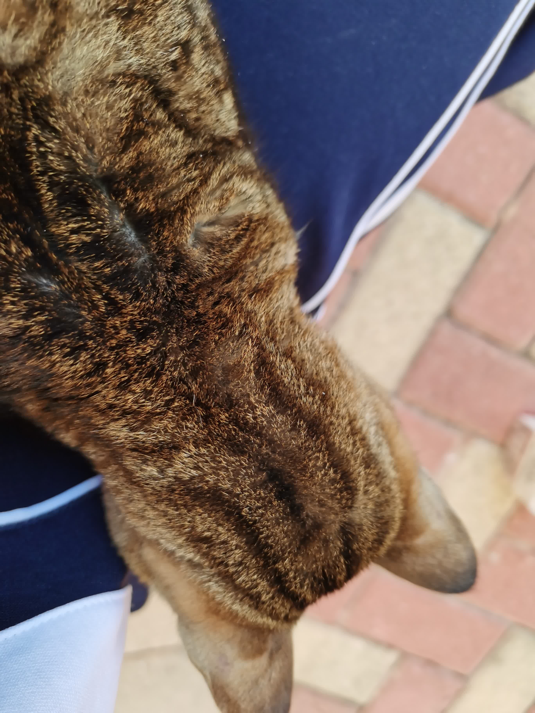
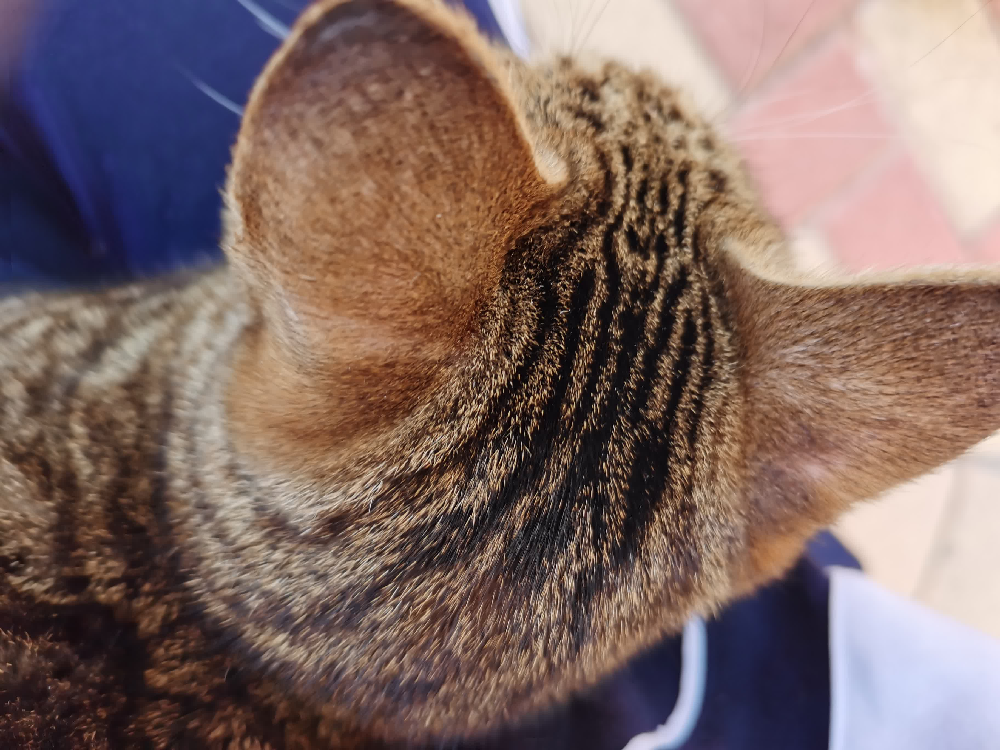
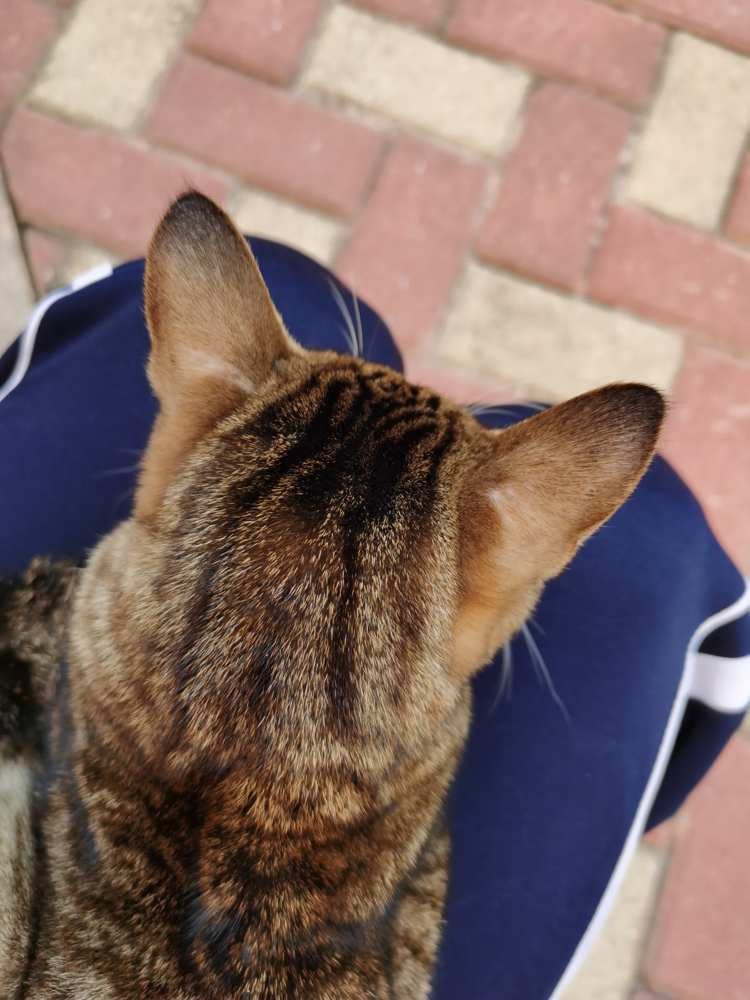
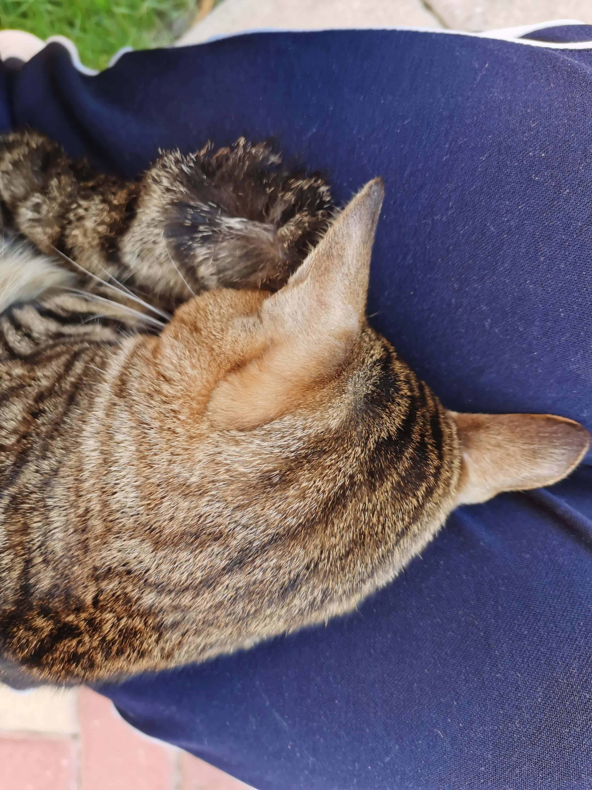
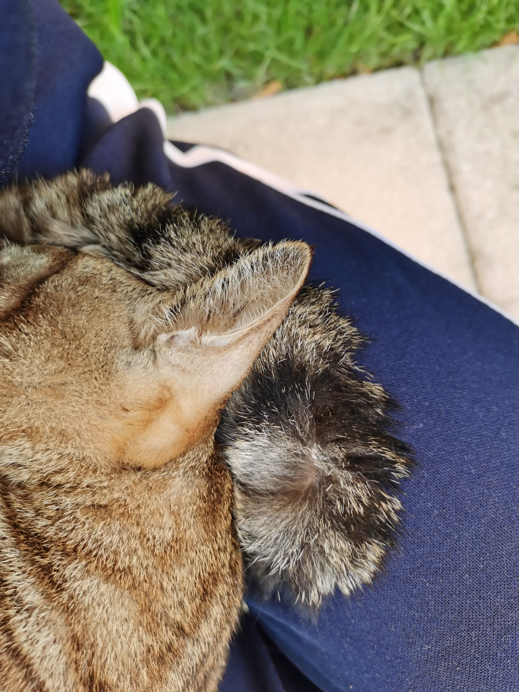
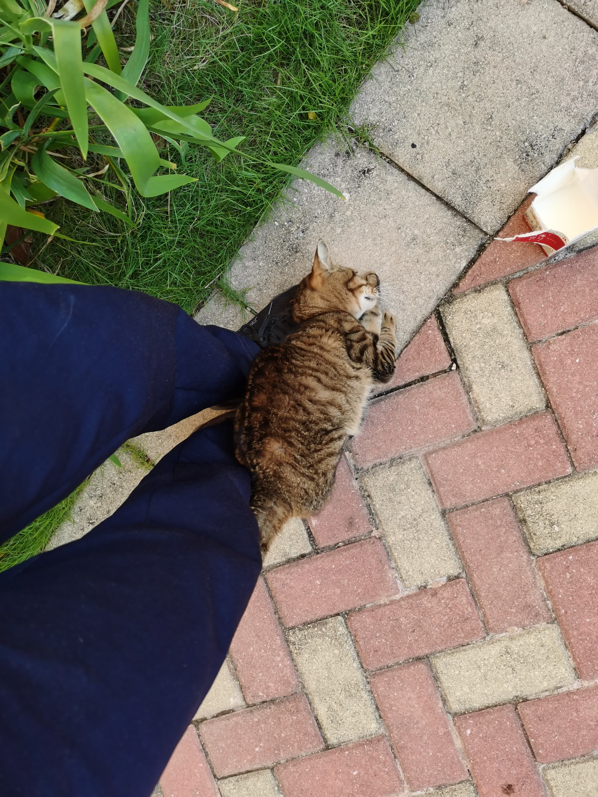
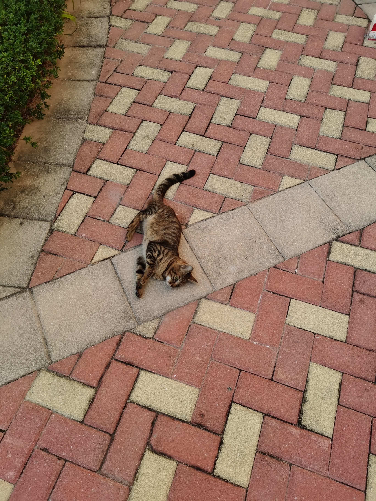
摄于 2021 年 11 月 8、9 两日。那两天我记得应该是在图书馆备考，不过似乎没到期末的时候，估计是学考什么的。去吃饭就见到这只猫。
这只猫是相当的亲人啊。第二天我去时，扒拉我裤子，有点痛，不过我想看它要干什么就没动。结果它爬上来，然后在我怀里睡觉。睡了大概十五分钟，我就赶它下来了，然后它在地上打滚，甚是可爱。而且相貌也很可爱，我很喜欢这样的外形。
拍毕业照时回去了泥岗，试图找了一下，未果。好像是上课期间，在操场看见一个女生在照顾一只猫，但我也没走近无法确认是不是它。本想等她走后上前看看，但最终还是我没时间了先走了。于是我与这只猫只见过两面。
突然可以理解 L 为什么觉得 S 可爱了：这么漂亮，又像（是）只粘人的猫咪，谁能觉得不可爱呢？
杂记
OneDrive
开学前靠着 smail.nju.edu.cn 在微软那里拿了个 1T OneDrive，存了 700+G。看学校文档说还有个世纪互联运营的 5T OneDrive，然而几次尝试未果，来南京后也试过，同样不行。
结果这（上）周试了一下，可以了，于是就愉快的用起来了。
然而我没找的简易方便快捷的转移 OneDrive 内容的方法，就只好采用最原始的「下载->剪贴->上传」方法。已经四天多了，还没弄完。
OneDrive 使用过程中发现它抽风似的读盘，任务管理器显示它读盘速率 300M/s+，偶尔会降下去，然后再回升。导致我打开文件变慢。上 Eleven 论坛问也没找到解决方案。我猜是我用了 mklink 把一些别处的文件存在 OneDrive 的原因，但没有实际验证。截至今日，我 512G 的固态已经给读取 134T 了，而只写入了 5.2T。